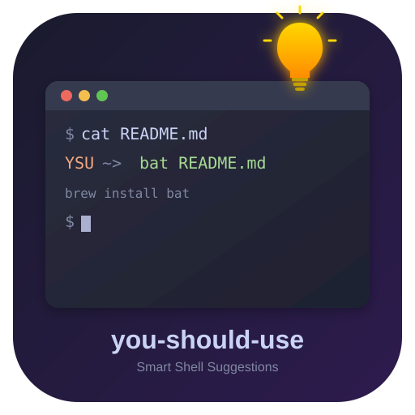

Smart Shell Suggestions
A shell plugin that helps you work smarter by reminding you of aliases, suggesting modern command alternatives, and providing AI-powered rewrites.
Forgot you had an alias? The plugin gently reminds you when you type the full command, helping you build muscle memory.
Still using cat, find, or ls? Get suggestions for modern Rust/Go tools like bat, fd, and eza.
With Ollama running locally, get intelligent command rewrites. Async and cached — never slows down your workflow.
Scans your shell history for frequently typed commands and suggests creating aliases. Run ysu discover to find opportunities.
Run ysu doctor to check shell compatibility, hook registration, LLM connection, and more.
Auto-detects your package manager (brew, apt, pacman, dnf...) and shows the right install command for missing tools.
Suggestions only appear when the modern alternative is actually installed on your system.
| Legacy | Modern | Why |
|---|---|---|
cat | bat | Syntax highlighting, line numbers, git integration |
ls | eza / lsd | Icons, git status, tree view |
find | fd | Simpler syntax, faster, respects .gitignore |
grep | rg / ag | Faster, respects .gitignore |
du | dust / ncdu | Visual disk usage |
top | btop / htop | Beautiful resource monitor |
ps | procs | Modern process viewer with tree display |
diff | delta | Syntax highlighting, side-by-side view |
sed | sd | Simpler regex syntax |
curl | httpie | Human-friendly HTTP |
man | tldr | Community-driven examples |
cd | zoxide | Learns your habits |
vim | nvim | Modernized Vim fork |
brew install vangie/formula/you-should-useThen add the source line shown in the post-install message to your shell config.
curl -fsSL https://raw.githubusercontent.com/vangie/you-should-use/main/install.sh | shAuto-detects your shell, clones the repo, and configures your rc file.
git clone https://github.com/vangie/you-should-use \
${ZSH_CUSTOM:-~/.oh-my-zsh/custom}/plugins/you-should-use
# Then add to plugins in ~/.zshrc:
plugins=(... you-should-use)zinit light vangie/you-should-usezplug "vangie/you-should-use"# Add to .zsh_plugins.txt:
vangie/you-should-usefisher install vangie/you-should-useomf install https://github.com/vangie/you-should-useysu status
Show configuration and statistics dashboard
ysu config
Interactive configuration wizard
ysu doctor
Run diagnostics and check for issues
ysu discover
Scan history and suggest new aliases
ysu ignore
Suppress a specific suggestion (e.g. ysu ignore make:just)
ysu unignore
Re-enable a previously suppressed suggestion
ysu cache
Manage LLM suggestion cache (clear, size)
ysu update
Update to the latest version
ysu uninstall
Remove from your system